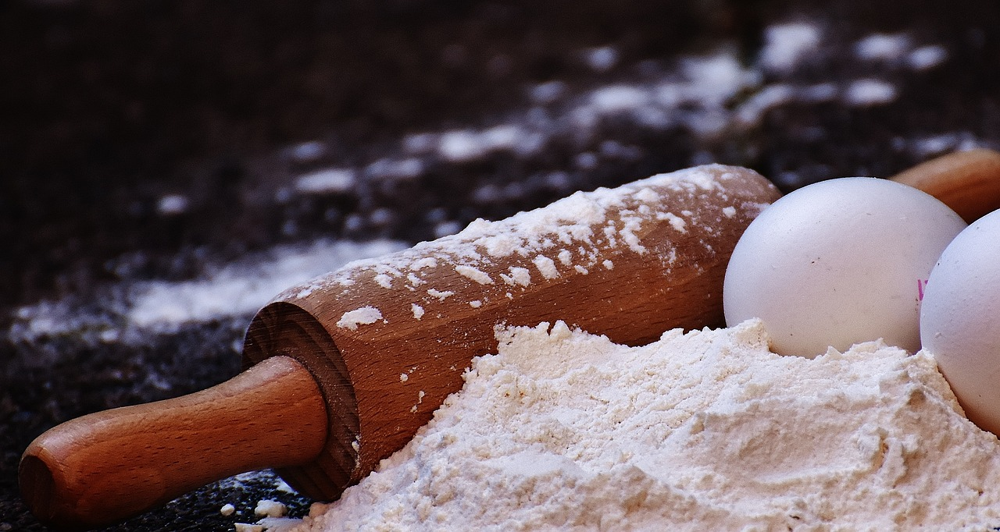
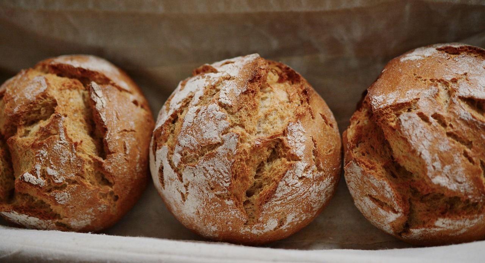

Parker House style rolls
I don't normally bake yeasted breads but during the holidays there is something special about a home made roll. I recommend accompanying with a homemade whipped butter - I included a mini recipe to go with the rolls.

Ingredients
- 2 c whole milk
- 1/2 c + 1tbsp sugar, divided
- 1/3 cup butter
- 2 tsp kosher salt
- 2 packets active dry yeast
- 2/3 cup warm water (100-110 degrees)
- 8-9 c all purpose flour
- 3 beaten eggs

Instructions
- Combine milk, 1/2 c sugar, butter, and salt in a medium saucepan. Heat over medium heat till butter melts. Remove from heat and allow to cool to lukewarm. (Must be below 110 deg)
- While milk cools, dissolve yeast and 1 tbsp sugar in warm water. Let stand 10 min. If yeast has not bubbled you must repeat this step.
- In bowl or large mixer combine 3 c flour and milk mixture. Beat on low for 30 sec, scraping as you go. Add yeast mixture and beat on high for 3 min.
- Add beaten eggs. Eggs must be pre-beaten. Then stir in as much remaining flour as needed to make a soft dough. Should come away from bowl but stick to finger.
- Cover bowl with a clean cloth and place in a warm place to rise for 1 hour. Meanwhile prep two 9x13 pans by lining with cooking spray or melted butter.
- Punch down dough, lightly flour work surface, turn out dough, and divide in half. Roll out each half into a rectangle then cut into 12 equal pieces each. Shape each piece into a ball and space into prepared pans.
- Cover with a clean cloth and allow to rise in a warm place for 30 min. Meanwhile pre-heat oven to 375 deg. When ready bake for 15-18 min until golden brown.
Note: When you pull the rolls from the oven rub a stick of cold butter over the top of the rolls while still hot and let cool.

Bonus recipe: Whipped Brown Sugar Butter
- 1/2 cup salted irish butter (room temp)
- 2 tbsp heavy cream
- 1 tbsp brown sugar
- Note: Combine ingredients in a small mixing bowl and whip together till smooth and creamy. Use a spatula to scrape into serving bowl and enjoy.